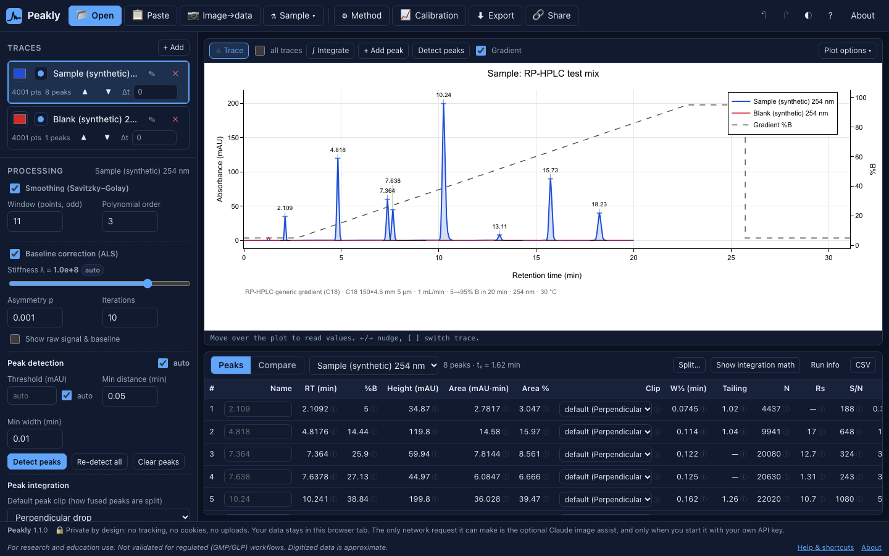

Chromatogram analysis in one file, right in your browser.
Peakly reads HPLC and FPLC data from CSV, vendor exports, Agilent .ch files and even photos of printed chromatograms, then integrates peaks with math you can inspect. Free, open source, and nothing leaves your computer.
Version 1.1.0 · MIT license · Works offline once loaded · Chrome, Edge, Firefox, Safari, phones

For research and education use. Not validated for regulated (GMP/GLP) workflows. Digitized data is approximate.
What it does
Everything you need to go from a raw export (or a picture of one) to a defensible peak table.
Reads your files
CSV/TSV, Excel, JSON, JCAMP-DX, AnDI/netCDF, mzML, Agilent ChemStation .ch, and text exports from Agilent, Thermo, Shimadzu, Waters, Cytiva UNICORN and Bio-Rad.
Digitizes images
Turn screenshots, PDFs and phone photos of chromatograms into data, with perspective correction and an honest ± uncertainty on every number.
Transparent integration
Automatic or click-to-integrate peaks, six ways to split fused peaks, and an audit panel that shows every step of each area.
Method context
Gradient program with dwell and void time, %B or salt concentration at elution, and USP/Ph. Eur. tailing, plates, resolution and S/N.
Calibration
Linear, through-origin or quadratic fits with weighting, inverse prediction with confidence intervals, LOD/LOQ and extrapolation flags.
Compare and share
Overlay runs, match peaks across them, and export PNG/SVG, CSV, PDF, project files or a share link that never touches a server.
How it works
Peakly is a single HTML file. Open it and it runs; there is nothing to install and no server doing the work.
- OpenUse the hosted app or the downloaded file. Pinned libraries load from public CDNs.
- Drop dataDrag in a file or an image. Peakly detects the format; if unsure, you map the columns.
- AnalyzeDetect or click peaks, set the method, fit, calibrate. Every number links to its formula.
- ExportSave a PDF report, tables, figures, a project file or a share link.
Private by design
Your chromatograms are your business.
- No uploads: files are read by your browser, in memory.
- No accounts, no cookies, no analytics, no telemetry in the app.
- Share links keep data in the URL
#fragment, which browsers never send to a server. - The optional Claude vision assist runs only with your own API key, held in memory and never saved.
Details, including the optional feedback survey: privacy policy.
Open and honest
Trust comes from being able to check.
- MIT-licensed source code, written from published algorithms.
- Every formula documented, with references.
- Built-in self-tests you can run from the Help menu.
- Measured digitizer accuracy, limits stated up front.
Cite Peakly
If Peakly helped your research or teaching, a citation helps keep it maintained.
Schmitt, J. (2026). Peakly: a free, single-file, in-browser HPLC/FPLC chromatogram analyzer (Version 1.1.0) [Computer software]. https://github.com/jschmitt1531/peakly
Machine-readable: CITATION.cff. A Zenodo DOI will be added with the first archived release.
Documentation
Start with a tutorial, or dig into the math.
- README and quickstart
- FAQ
- Tutorials (CSV, vendor exports, binary files, FPLC, screenshots, photos, calibration, comparing runs, integration)
- Calculations
- Integration and peak clipping
- Calibration curves
- Validation
- Digitizer accuracy
- Data schemas (JSON Schemas)
- Contributing
- Security and privacy
- Roadmap